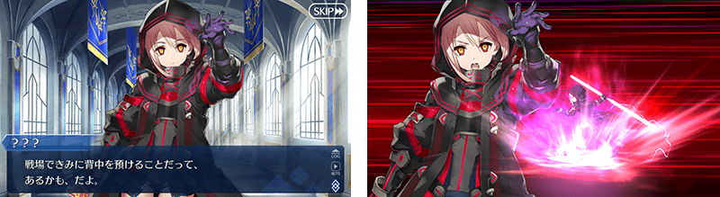
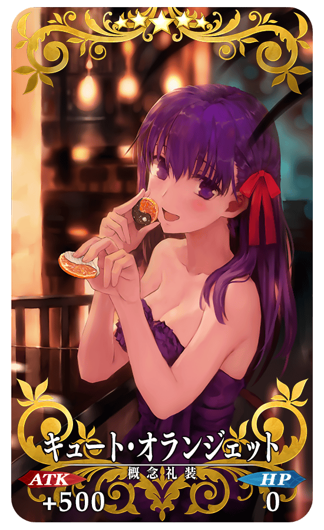
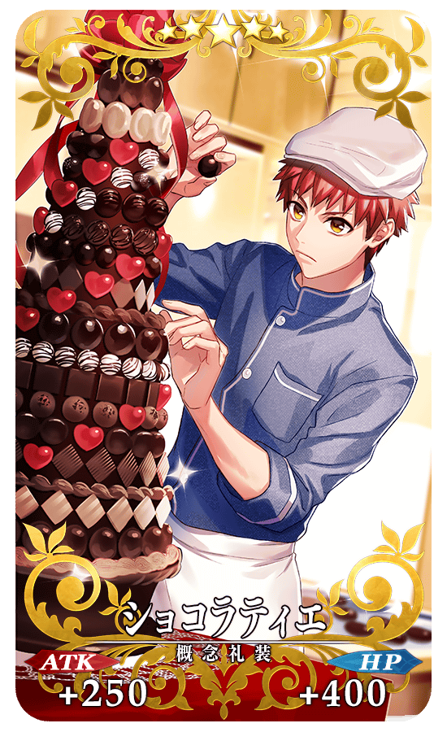
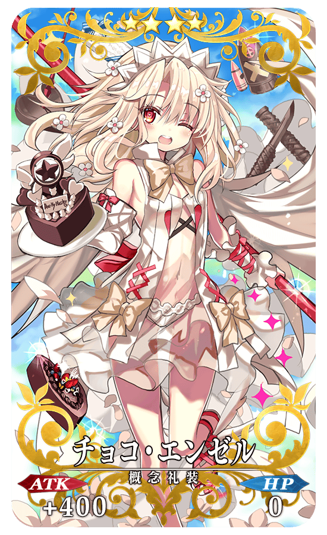
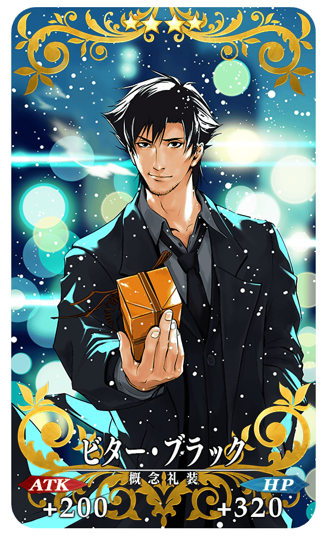
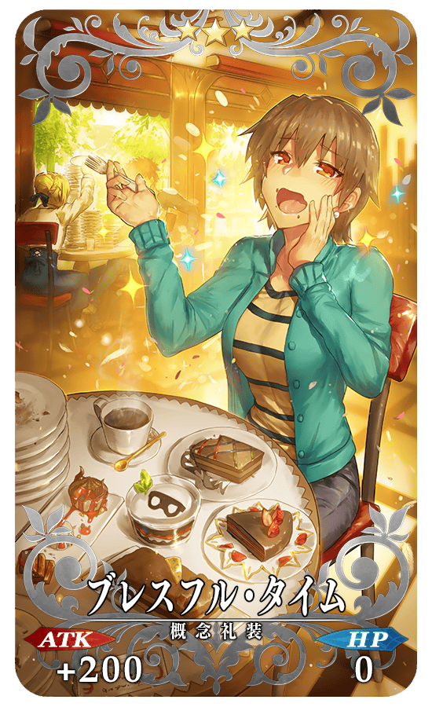
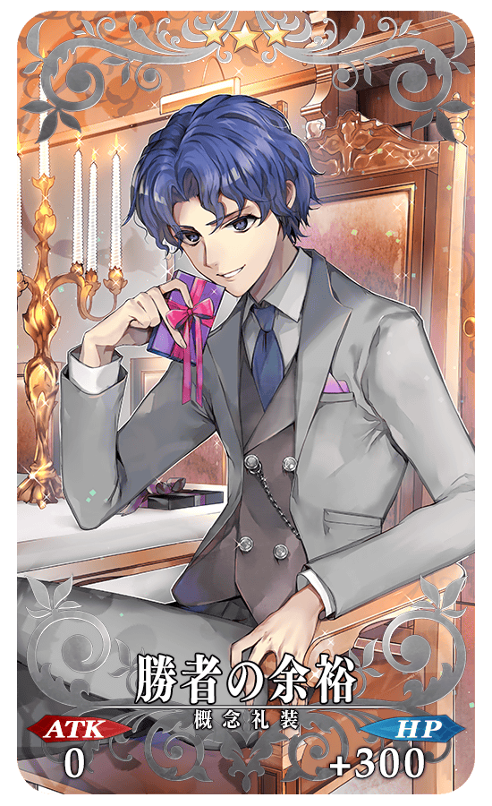
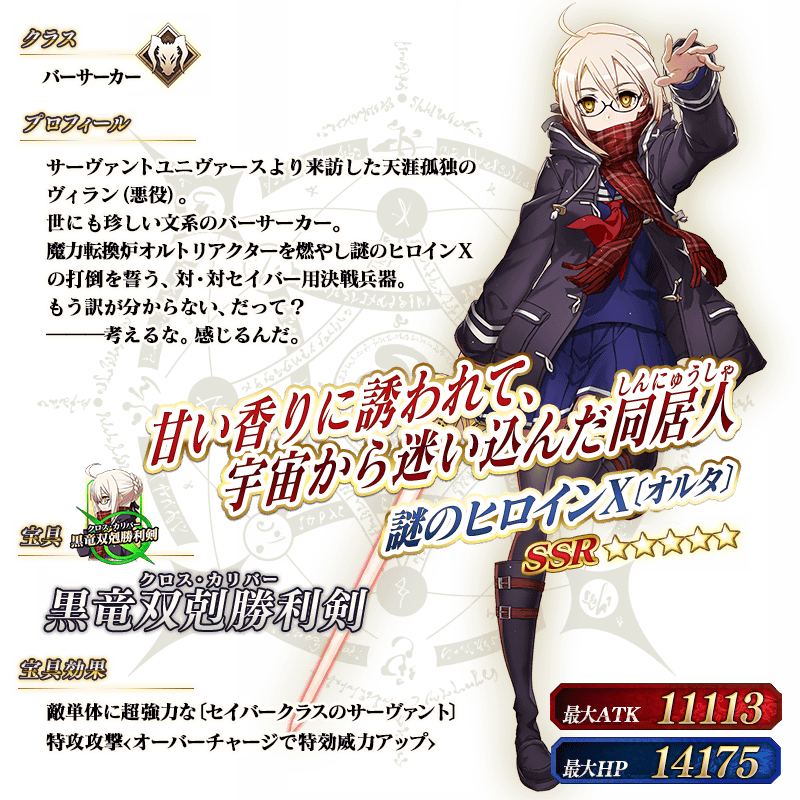

◆「復刻 情人節2017Pick Up召喚」期間◆
期間:2018年2月7日(三) 17:00～2月21日(三) 11:59
舉辦期間限定「復刻 情人節2017Pick Up召喚」！
「★5(SSR)謎之女主角X〔Alter〕」以期間限定登場！
變更在2017年舉辦的「情人節2017Pick Up召喚」一部份内容進行復刻。
※謎之女主角X〔Alter〕在Pick Up期間結束後不會追加到故事召喚。
※請注意男性Servant也會被抽出。
詳情請在聖晶石召喚畫面左下的召喚詳細確認。
另外，概念禮裝「★5(SSR)キュート・オランジェット」「★5(SSR)ショコラティエ」「★4(SR)チョコ・エンゼル」「★4(SR)ビター・ブラック」「★3(R)ブレスフル・タイム」「★3(R)勝者の余裕」以期間限定復刻Pick Up！
※「★3(R)ブレスフル・タイム」「★3(R)勝者の余裕」在Pick Up期間中，也能在友情點數召喚獲得。
※於本Pick Up召喚復刻Pick Up的概念禮裝，在期間限定活動「情人節2018 ～繁榮的巧克力花園 of 情人節～」中，並無活動専用道具的掉落獲得數提升效果。
Pick Up期間中，期間限定Servant、期間限定概念禮裝的出現機率提升！
10次召喚中確定1張★4(SR)以上和確定1位★3(R)以上的Servant！
※確定★4(SR)以上包含Servant和概念禮裝。
※所謂「出現機率提升」意指比同稀有度的Servant及概念禮裝出現機率更高的設定。
在達文西工房的「稀有稜鏡交換」，追加謎之女主角X〔Alter〕的體驗關卡。
◆謎之女主角X〔Alter〕體驗關卡追加時間◆
2018年2月7日(三) 17:00～
◆追加道具◆
謎之女主角X〔Alter〕體驗關卡
◆關卡通過報酬◆
狂之輝石 3個
狂之魔石 2個
狂之秘石 1個

| 追加道具 | 能交換 次數 |
必需的 稀有稜鏡數 |
|---|---|---|
| 謎之女主角X〔Alter〕體驗關卡 | 1次 | 1個 |
※請注意已通過1次謎之女主角X〔Alter〕體驗關卡的話，無法於達文西工房的「稀有稜鏡交換」交換。
介紹期間限定Servant謎之女主角X〔Alter〕的寶具演出！
在「Fate/Grand Order」官方網站內的公告中，公開了「★5(SSR)謎之女主角X〔Alter〕」的寶具演出。敬請確認。
|  |
★★★★★SSR |
|  |
★★★★★SSR |
|  |
★★★★SR |
|  |
★★★★SR |
|  |
★★★R |
|  |
★★★R |

關於可得到豪華報酬和來自Servant情人節禮物的期間限定活動「情人節2018 ～繁榮的巧克力花園 of 情人節～」的詳情請自下述橫幅確認。